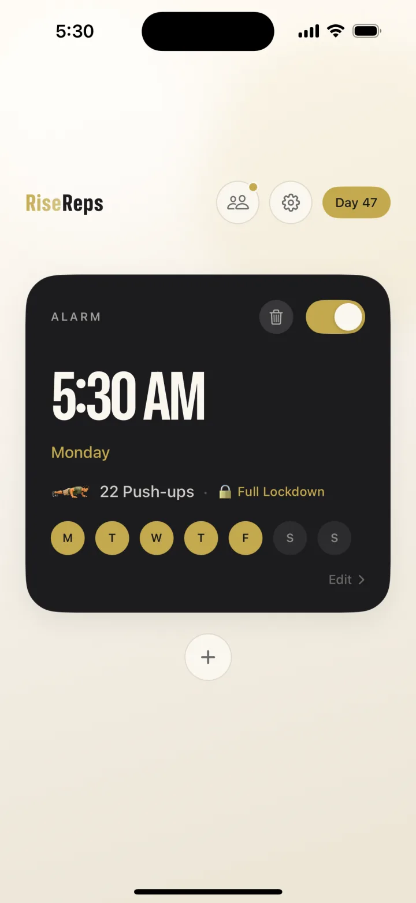
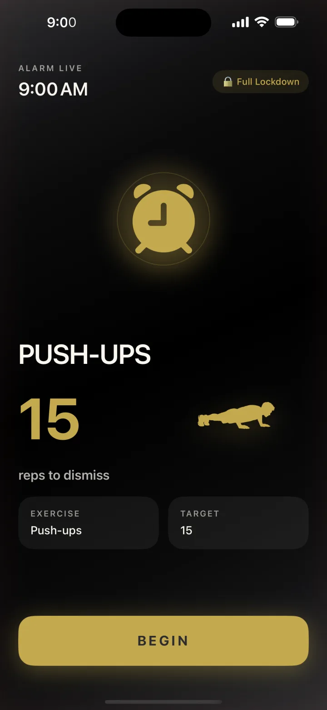
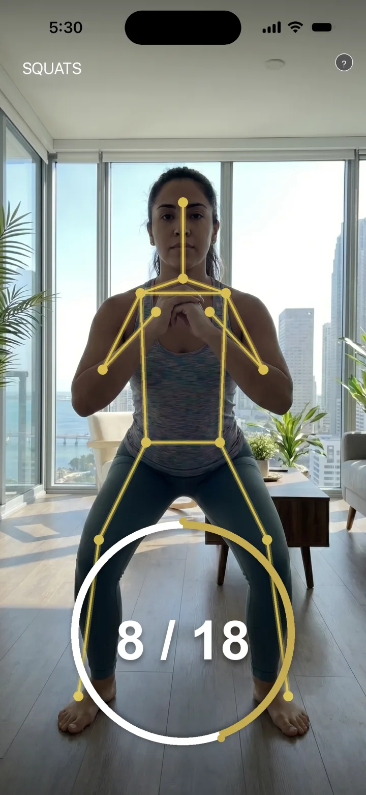
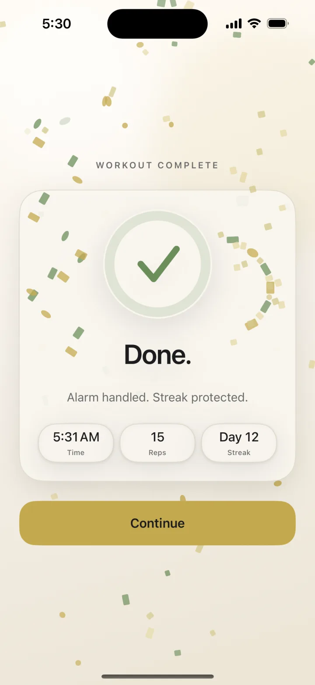
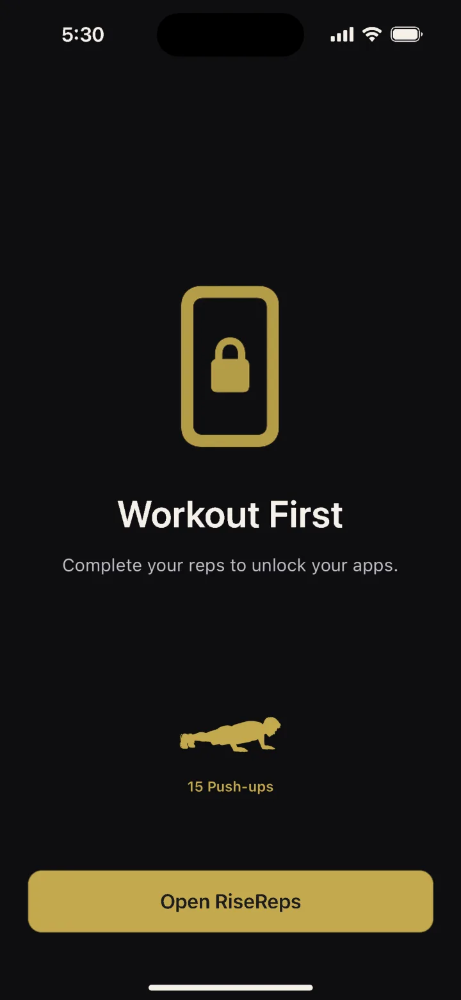
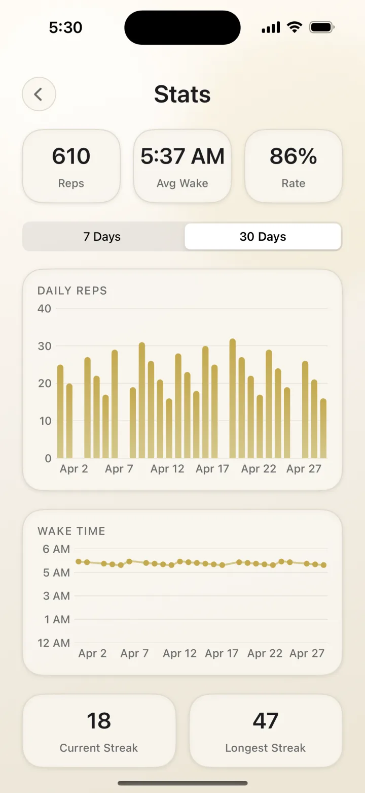
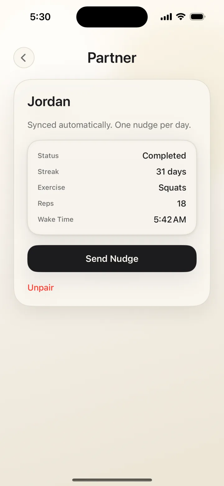

ステップ 01
アラームをセット。
時刻、運動の種類、厳しさを選びます。Lockdownモードなら、終わるまで他のアプリはすべて非表示に。

スヌーズボタンなし。タップで止めることもできません。アラームが鳴ったら、 カメラが腕立て伏せ・スクワット・ジャンピングジャックの回数をカウント。 やり切るまで鳴りやみません。早起きして、まず体を動かす。 一日が始まる前に、朝を勝ち取りましょう。

前の晩にセットして、鳴ったら体を動かすだけ。早起きの連続記録がどんどん積み上がります。
時刻、運動の種類、厳しさを選びます。Lockdownモードなら、終わるまで他のアプリはすべて非表示に。

アラームが鳴ったら、カメラがデバイス上の姿勢検出で1回ずつカウント。ごまかしのタップも、抜け道もありません。

回数を確認、アラーム停止、連続記録もキープ。一日の始まりから、もう一歩リードしています。

腕立て伏せ、スクワット、ジャンピングジャック。運動の種類も回数も自由に選べます。レベルアップ機能が毎週少しずつ目標を上げるので、習慣も一緒に成長します。
多くのアラームアプリは、甘えを許してしまいます。スヌーズボタン、スワイプ、布団の中で寝ぼけたまま解ける計算問題。RiseRepsは交渉の余地をなくしました。止める方法はただひとつ、運動をやり切ることです。

毎朝の記録は自動で残ります。回数、起床時刻、達成率、最長連続記録。その振り返りが、一度の良い朝を毎朝の習慣に変えていきます。

友だちとペアを組むと、記録が自動で同期されます。相手にはあなたの連続記録が、あなたには相手の記録が見えます。動き出せていない相手には、1日1回だけ「ひと押し」を送れます。

今夜セットして、明日の朝は体を動かす。一日の最初の決断に勝つだけで、何が変わるかを実感してください。
無料ダウンロード · 無料トライアル付き · 現在はiPhoneのみ対応